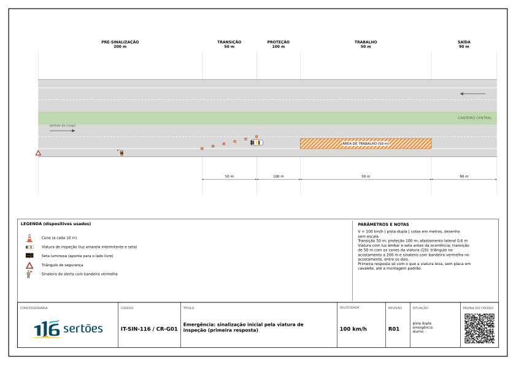

RASCUNHO R01 Revisão em elaboração, ainda não aprovada. Use somente como referência.
Croqui diurno



Resumo da aplicação
Resumo provisório: campos do catálogo de croquis, sem o texto completo da IT.
Descrição
Primeira resposta a ocorrência na pista com o que a viatura leva, até a chegada da equipe com a montagem padrão.
Parâmetros
| Via | dupla |
| Velocidade | 100 km/h |
| Tipo de serviço | emergência |
| Faixas por sentido | 2 |
| Extensão do trabalho | 50 m |
Dispositivos mínimos
- viatura com seta luminosa e luz amarela intermitente
- cones da viatura
- triângulo no acostamento
- sinaleiro com bandeira vermelha no acostamento
Notas
Na primeira resposta, a viatura não depende de placa em cavalete. Assim que a equipe chega, evoluir para o CR-G02 a CR-G05.
Checklist
LV-05 · Emergência (13 itens)
Primeira resposta e passagem para a montagem padrão. Preenche: Equipe de inspeção de tráfego.
- CCO avisado com rodovia, sentido, km PER, faixas ocupadas, vítimas e apoio necessário
- Viatura parada antes da ocorrência, na faixa afetada, com seta luminosa e luz amarela intermitente ligadas
- Triângulo no acostamento, no início da pré-sinalização mínima de 200 m, e sinaleiro com bandeira vermelha no acostamento
- Transição curta com os cones da viatura, até 50 m
- Quem desce da viatura usa vestimenta de alta visibilidade e fica atrás dela, fora da faixa em tráfego
- PRF acionada pelo CCO; mensagem nos PMV fixos
- Montagem padrão do croqui da ocorrência implantada assim que a equipe chega
- Sinalização inicial da viatura recolhida depois da montagem padrão
- Interdição total: veículo com seta luminosa no fim da fila e sinaleiro de alerta antes dele
- Interdição reduzida a bloqueio de faixa ou convertida em desvio assim que possível
- À noite: seta e luz amarela ligadas até a montagem padrão; torre de iluminação no local do atendimento
- Correção com mais de uma jornada: plano emergencial aprovado e variante noturna
- Evolução do dano conferida a cada turno, com ampliação da interdição se o dano avançar
Todos os croquis · Revisão R01